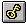

Use this option to view the key with which the active document was encrypted or decrypted. If no key is available for the active document, this menu option will not be offered.
The key will be output in the Key dialog box, assuming it is a one-line key, as is the case in all the encryption algorithms in CrypTool, with the exception of the Hill encryption algorithm. If the document has been encrypted or decrypted using the Hill encryption algorithm, then the key is output in the Key for Hill cipher dialog box.
Shortcuts
| Toolbar: |  |